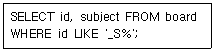
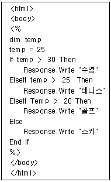
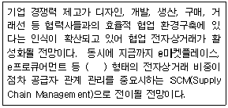
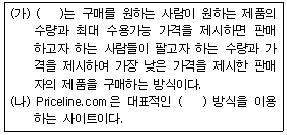
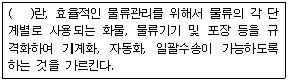
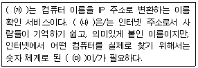

전자상거래운용사 (2003-04-20 기출문제)
1과목: 인터넷 일반
1. 다음 HTML과 관련된 설명 중 옳은 것은?
- HTML은 대소문자를 구분한다.
- ＜ENTER＞ 태그를 사용하면 한 줄을 띄워서 출력한다.
- ＜P＞ 태그는 문단을 나누는데 사용된다.
- 공백 문자(SPACE)를 연속해서 치면 그 만큼 문자 사이가 띄어지게 된다.
(정답률: 알수없음)

2. 상품 진열대를 하나의 사진으로 찍어서 이미지 파일로 만든 다음 이미지 내의 각 상품을 클릭할 때 선택된 상품의 상세 정보를 보여줄 수 있게 하기 위해서 이미지 내의 영역에 링크를 만드는 것을 무엇이라 하는가?
- 사이트 맵
- 스토리보드
- 이미지 맵
- 레이아웃
(정답률: 알수없음)
3. WYSIWYG 방식의 편집도구와 텍스트 에디팅 방식의 편집도구에 대한 다음 설명 중 옳지 않은 것은?
- WYSIWYG 방식의 편집 도구는 텍스트 방식 편집 도구보다 일반적으로 사용이 편리하다.
- WYSIWYG 방식의 편집 도구에는 나모웹에디터와 드림위버 등이 있다.
- 윈도우즈의 메모장으로는 HTML문서를 작성할 수 없다.
- 나모웹에디터는 즉시 사용할 수 있는 다양한 클립아트 이미지를 제공한다.
(정답률: 알수없음)
4. 다음 중 급격한 정보화 사회로의 변화에 따른 역기능으로 볼 수 없는 것은?
- 개인의 정보노출 증대로 사생활 침해가 많아진다.
- 컴퓨터를 이용한 신종범죄가 줄어든다.
- 가상공간의 확대로 현실도피와 비인간화가 증가한다.
- 중앙컴퓨터 또는 서버의 장애로 사회적, 경제적 혼란을 초래할 수 있다.
(정답률: 알수없음)
5. 다음 SQL문에서 WHERE절의 조건이 의미하는 것은?

- S로 시작되는 3문자의 id를 검색한다.
- S로 시작되는 모든 id를 검색한다.
- 문자열로만 이루어진 모든 id를 검색한다.
- 두 번째 자리 문자가 S인 모든 id를 검색한다.
(정답률: 알수없음)
6. "여기"라는 링크를 클릭할 때 메일을 송신할 수 있는 창이 나타나도록 작성한 것은?
- ＜a href="mailto:kskim@mail.com"＞여기＜/a＞
- ＜a href="http://kskim@mail.com"＞여기＜/a＞
- ＜a href="kskim@mail.com"＞여기＜/a＞
- ＜link href="sendto:kskim@mail.com"＞여기＜/a＞
(정답률: 알수없음)
7. 웹 프로그래밍 언어는 크게 컴파일 기반 언어와 스크립트 기반 언어로 나눌 수 있다. 다음 중 그 특성이 다른 하나는?
- Perl
- Servlet
- PHP
- ASP
(정답률: 알수없음)
8. 다음 중 인터넷 주소에 대한 설명 중 옳은 것은?
- 인터넷 주소는 전 세계 컴퓨터에 유일한 주소를 설정한 것으로서 IP주소(Internet Protocol Address)라고 한다.
- IP 주소는 숫자로 구성되어 있고, 16비트의 4자리로 구성되어 있다.
- DNS(Domain Name System)는 숫자로 구성되어 있는 IP 주소를 영문자로 변환할 수 없다.
- 우리나라의 도메인 이름을 관리하는 곳은 InterNIC 이다.
(정답률: 알수없음)
9. 다음 중 HTML에 비해 애니메이션이 강화되고, 사용자 상호작용에 좀 더 민감한 웹페이지를 만들 수 있게 해 주는 새로운 HTML 태그, 옵션, 스타일 시트 및 프로그래밍 등을 의미하는 집합적인 용어는?
- DHTML
- JavaScript
- VBScript
- ASP
(정답률: 알수없음)
10. 유즈넷(Usenet)에 대한 설명 중 가장 옳지 않은 것은?
- 텍스트로 제작된 정보를 교환할 수 있다.
- 전자메일과 달리 불특정 다수의 의견을 볼 수 있다.
- 멀티미디어 데이터는 교환할 수 없는 한계가 있다.
- 유즈넷은 수많은 하위의 뉴스그룹으로 나뉘어져 있다.
(정답률: 알수없음)
11. 다음 중 JavaScript의 Window 객체(Object)의 메소드(Method)가 아닌 것은?
- open
- alert
- prompt
- write
(정답률: 알수없음)
12. 다음 중 인터넷상의 정보 보호와 관련한 설명 중 가장 옳은 것은?
- 인터넷은 정보를 공유한다는 목적이 있기 때문에 모든 웹사이트의 정보들을 동의 없이 사용해도 관계없다.
- 가입된 회원들에 대한 정보는 비영리를 목적으로 하는 경우 회원의 동의 없이 사용할 수 있다.
- 인터넷 웹사이트에 회원가입을 위해 본인 이외의 가족 정보를 동의 없이 사용해도 관계없다.
- 어떠한 경우라도 해킹은 범죄이기 때문에 해킹은 하지 말아야 한다.
(정답률: 알수없음)
13. 월드와이드웹(WWW) 사용상의 네티켓(Netiquette)에 대한 다음 설명 중 가장 적절하지 않은 것은?
- 웹 페이지를 제작할 때는 대용량의 멀티미디어 데이터들을 많이 활용한다.
- 비디오나 사운드 등 용량이 큰 파일을 제공할 때는 파일 옆에 파일 형식과 크기를 명시하여 사용자가 파일을 다운받는데 걸리는 시간을 예측할 수 있도록 한다.
- Image Map으로 된 부분은 Lynx와 같은 텍스트 브라우저 사용자를 위해 텍스트로 된 메뉴도 함께 표기한다.
- Trademark(TM)나 Copyright(C) 등의 저작권을 분명히 밝힌다.
(정답률: 알수없음)
14. 웹메일 서비스에 대하여 설명한 것 중 가장 적절하지 못한 것은?
- 사용하기 전에 먼저 가입해야 한다.
- 사용하기 전에 먼저 메일서버를 설정해야 한다.
- 장소에 관계없이 인터넷이 되는 곳이면 어디서든지 사용가능하다.
- 웹브라우저만 있으면 쉽게 접속하여 사용할 수 있다.
(정답률: 알수없음)
15. 다음 중 아래 ASP 문서 수행 결과로 옳은 것은?

- 수영
- 테니스
- 골프
- 스키
(정답률: 알수없음)
16. 다음 중 CSS에 대한 설명 중 옳지 않은 것은?
- ＜STYLE＞ ... ＜/STYLE＞ 태그를 사용하여 ＜HEAD＞ ... ＜/HEAD＞ 태그 안에 작성할 수 있다.
- HTML 태그에 대해 일괄적인 형식을 정의할 수 있다.
- 스타일 정의 표기 방법은 "file/css" 또는 "file/javascript" 방법을 사용할 수 있다.
- ＜STYLE＞...＜/STYLE＞ 태그를 사용하지 않고 직접 HTML 태그에 스타일을 지정할 수 있다.
(정답률: 알수없음)
17. 다음 중 검색엔진에 대한 설명 중 옳은 것은?
- 단어별 검색엔진은 하나의 데이터베이스에 모든 데이터를 저장하고 특정 검색단어를 입력하여 원하는 정보를 찾는 방법으로 야후가 여기에 속한다.
- 주제별 검색엔진은 정보를 주제별로 분류하여 데이터베이스에 저장하여 분류 정도만 알아도 찾을 수 있도록 한 방법으로 라이코스가 여기에 속한다.
- 주제별 검색엔진은 찾고자 하는 정보의 분류만 알아도 찾을 수 있으나, 여러 단계를 거쳐야 한다는 단점이 있다.
- 단어별 검색엔진은 검색어로 신속히 찾을 수 있으나, 데이터베이스에 색인을 저장하지 않고 모든 데이터를 저장해야 하는 단점이 있다.
(정답률: 알수없음)
18. 다음 중 검색단어를 입력하기 위한 일반적인 방법에 대한 설명 중 옳지 않은 것은?
- 두 개 이상의 단어를 AND 연산자로 연결하는 경우 입력한 단어가 모두 나타나는 정보를 찾는다.
- 두 개 이상의 단어를 OR 연산자로 연결하는 경우 한 단어이상 나타나는 정보를 찾는다.
- 검색 단어를 입력할 때는 웹사이트에서 지정한 국가의 언어만 가능하다.
- 검색단어를 조합하기 위한 연산자는 웹사이트마다 약간씩 차이가 있다.
(정답률: 알수없음)
19. 다음 중 테이블 태그와 관련한 설명 중 옳지 않은 것은?
- ＜TABLE＞ 태그의 옵션은 그 적용범위가 테이블 전체에 적용된다.
- 테이블 안에 테이블을 만들 때는 ＜TD＞...＜/TD＞ 또는 ＜TH＞...＜/TH＞ 태그 안에 ＜TABLE＞...＜/TABLE＞ 태그를 이용하여 테이블을 작성한다.
- 테이블의 셀을 합치기 위해서는 ＜TD＞ 또는 ＜TH＞ 태그에서 ROWSPAN 또는 COLSPAN 옵션을 이용하여 합칠 수 있다.
- 테이블의 열에 대해 그룹화 할 때는 ＜TC＞...＜/TC＞ 태그를 사용한다.
(정답률: 알수없음)
20. ADSL(Asymmetric Digital Subscriber Line)에 대한 설명으로 옳지 않은 것은?
- ADSL은 전화회선을 통해 높은 대역폭으로 디지털 정보를 전송하는 기술이다.
- DSL는 비대칭인 ADSL 이외에 대칭(Symmetric)인 SDSL, 속도적응(Rate-Adaptive)인 RADSL, 고속(High bit rate)인 HDSL, 초고속인(Very high speed)인 VDSL 등으로 구분한다.
- 전화국에서 가정까지 거리 제한은 없다.
- DSL의 종류가 다양하기 때문에 xDSL이라고도 한다.
(정답률: 알수없음)
2과목: 전자상거래 일반
21. 물리적 상품과 비교하여 디지털 상품의 특징으로 가장 적절하지 않은 것은?
- 재생산하는 경우에 소요되는 비용이 매우 작다.
- 매우 쉽게 변형이 가능하다.
- 기능보다는 외형의 중요성이 크다.
- 배송에 소요되는 비용이 매우 작다.
(정답률: 알수없음)
22. 포털(Portal) 사이트에 대한 아래의 설명 중 옳지 않은 것은?
- 포털은 오랫동안 고객들이 머무를 수 있도록 다양한 콘텐츠를 제공하기도 한다.
- 포털 사이트의 성공을 위해서는 메일 서비스, 정보 검색 서비스 등 다양한 콘텐츠의 체계적 정리가 필요하다.
- 포털 사이트는 그 출발 초기에서부터 주로 상품을 공급하는 업체의 수수료를 주요 기반으로 성장하고 있다.
- 포털은 인터넷으로 들어가기 위해 거쳐야 하는 관문의 의미를 담고 있다.
(정답률: 알수없음)
23. 다음 중 물류정보시스템과 가장 거리가 먼 것은?
- 수주 출하 처리 시스템
- 고객 관계 관리 시스템
- 수 배송 관리 시스템
- 창고 관리 시스템
(정답률: 알수없음)
24. 다음은 인터넷으로 인한 유통구조의 변화에 대한 설명이다. 이 중 가장 적절하지 않은 것은?
- 기존 업체들도 인터넷 진출을 활발히 하고 있다.
- 인터넷의 도입으로 중간상을 배제한 생산자와 소비자의 직접거래가 용이하다.
- 인터넷의 등장으로 중간상에 대한 새로운 역할이 요구되고 있다.
- 인터넷의 등장으로 기존 유통업자들과의 갈등이 해소되고 있다.
(정답률: 알수없음)
25. 소비자의 측면에서 전통적 구매와 비교하여 전자상거래를 이용한 구매의 특징으로 가장 거리가 먼 것은?
- 구매 시간과 공간의 제약이 줄어든다.
- 구매에 따른 물류비용이 감소한다.
- 다양한 구매 정보를 쉽게 얻을 수 있다.
- 다양한 대안의 비교를 통한 구매가 용이하다.
(정답률: 알수없음)
26. 목표 시장을 선정하기 위하여 인터넷 고객을 세분화하는 방법으로 가장 적절하지 않은 것은?
- 지역, 성향, 연령 등으로 세분화 할 수 있다.
- 세분화된 시장간에 특성의 차이가 크지 않도록 한다.
- 개별 고객까지 세분화하는 것을 개인 맞춤화라고 한다.
- 세분화를 통해 고객의 요구를 보다 잘 파악할 수 있다.
(정답률: 알수없음)
27. 다음 중 전자상거래에 있어 E-mail을 통한 고객 서비스 향상을 위해 제공하는 정보로서 가장 거리가 먼 것은?
- 관련 신상품에 대한 정보
- 신규회원 모집을 위한 이벤트 정보
- 주문 처리 현황
- 교환 및 환불 안내
(정답률: 알수없음)
28. 인터넷 광고 가격을 산정하는 모델중 소비자가 실제로 배너 광고를 클릭한 수를 기준으로 가격을 산정하는 방식은?
- CPM 방식
- CTR 방식
- Flat Fee 방식
- Pay Per Purchase 방식
(정답률: 알수없음)
29. 기업간 전자상거래(BtoB)의 효과와 거리가 먼 것은?
- 구매 및 조달 업무의 처리비용 절감
- 공급자 관리에 투입되는 인력의 최소화
- 주문, 선적, 결재의 처리시간 최소화
- 소비자관리 시스템을 통하여 소비자와의 유대강화
(정답률: 알수없음)
30. 인터넷 비즈니스의 확산에 관한 설명으로 가장 적절하지 않은 것은?
- 인터넷 비즈니스는 시장 진입 장벽이 낮다.
- 인터넷이 낮은 거래비용과 범세계적 시장이라는 경제적 동기를 제공했다.
- 전통적 형태의 제품과 서비스를 부가가치 없이 단순히 인터넷에 옮겨놓은 것으로 볼 수 있다.
- 기존의 매스 미디어를 포괄할 수 있고 양방향 의사소통이 가능한 인터넷 매체의 기술적 특성이 새로운 비즈니스를 창출하고 있다.
(정답률: 알수없음)
31. 인터넷 상거래시스템 구축을 위해서는 필수적으로 가상 쇼핑몰을 구축해야 한다. 쇼핑몰 서비스와 네트워크를 갖춘 사업자로부터 일정한 하드디스크 공간을 임대하여 쇼핑몰을 운영하는 것을 무엇이라 하는가?
- EC 호스팅
- ECRC
- IDC(Internet Data Center)
- CRM 시스템
(정답률: 알수없음)
32. 고객 정보를 활용하여 얻을 수 있는 효과로서 가장 거리가 먼 것은?
- 고객 세분화로 보다 높은 고객서비스를 제공할 수 있다.
- 고객과의 관계 유지를 통해 반복구매를 유도할 수 있다.
- 고객이 구매하는 상품과 관련된 다른 상품을 소개함으로 교차 판매를 가능하게 한다.
- 사이트의 구축 및 유지에 관련된 비용을 줄일 수 있다.
(정답률: 알수없음)
33. 인터넷의 보급과 전자상거래의 확산이 기업에 미친 영향으로 가장 관계가 먼 것은?
- 비즈니스의 생산성이 증대된다.
- 재고 및 판매비용이 절감된다.
- 중간상이 배제되며 새로운 중간상이 등장하지 않는다.
- 일대일 마케팅이 활성화된다.
(정답률: 알수없음)
34. 아래 괄호 안에 들어갈 가장 적절한 전자상거래의 유형은?

- B2B
- B2C
- B2G
- C2C
(정답률: 알수없음)
35. 전자화폐의 전제조건이라고 볼 수 없는 것은?
- 전자화폐 보유자가 누구인지 파악할 수 있어야 한다.
- 전자화폐는 화폐가치를 보유하여야 한다.
- 전자화폐는 가치를 저장하고 조회할 수 있어야 한다.
- 전자화폐는 쉽게 복사되거나 훼손되어서는 안된다.
(정답률: 알수없음)
36. 사이버 쇼핑몰 운영자가 고객 서비스 향상을 위해 고려해야 할 사항으로 가장 거리가 먼 것은?
- 사용이 쉬운 상품 주문 화면
- 재고확인 및 조달 시스템과의 연계
- 여러 사용자의 주문제품을 모아서 일괄 배송
- 가능한 배달일 제시
(정답률: 알수없음)
37. 다음은 전통적인 상거래에 대한 전자상거래의 특징을 설명한 것이다. 가장 적절하지 못한 것은?
- 많은 고객을 대상으로 하므로 기업간 경쟁이 약화된다.
- 고객이 많은 정보를 보유하게 되므로 판매자의 교섭력이 약화된다.
- 실제 상품이 아닌 상품에 대한 정보를 통해 거래
- 직접적인 접촉이 없는 비대면적 거래
(정답률: 알수없음)
38. 다음은 인터넷에서 사용되는 구체적인 가격전략에 대한 설명이다. 다음의 빈칸에 공통으로 들어가는 용어는?

- 경매제
- 역경매제
- 주문제품제
- 협상가격제
(정답률: 알수없음)
39. 다음 문장의 괄호 속에 들어갈 적당한 물류용어는?

- 물류표준화
- 물류공동화
- 물류합리화
- 물류정보화
(정답률: 알수없음)
40. 소비자들이 인터넷을 통해서 상품을 구매하기를 기피하게 되는 원인으로 가장 거리가 먼 것은?
- 개인정보가 유출될 우려가 있다.
- 상품의 품질을 확인하기 어렵다.
- 대량의 상품구매가 어렵다.
- 판매자를 신뢰하기 어렵다.
(정답률: 알수없음)
3과목: 컴퓨터 및 통신 일반
41. 컴퓨터 시스템을 작동시킬 때 주기억장치로 올라와 시스템이 끝날 때까지 주기억장치에 상주하며 운영체제(OS)의 핵심적인 기능을 담당하는 것은?
- 컴파일러
- 장치드라이버
- 커널
- 프로세스
(정답률: 알수없음)
42. BIOS에 대한 설명으로 틀린 것은?
- BIOS는 하드웨어 장치들과 운영체제(OS)를 연결하는 소프트웨어이다.
- BIOS는 사용자가 필요에 따라서 기본적인 시스템 구성을 변경할 수 있도록 만든 프로그램이다.
- BIOS는 일반적으로 RAM에 저장된다.
- BIOS에서 하드웨어 장치들을 설정할 수도 있다.
(정답률: 알수없음)
43. 인터넷 웜(worm) 바이러스에 관한 다음 설명 중 옳은 것은?
- 인터넷 웜 바이러스는 파일을 지우는 등의 회복할 수 없는 피해를 끼치지 않는다.
- 인터넷 웜 바이러스는 사용자의 개입 없이 시스템의 취약점을 통해 네트워크 상에서 유포된다.
- 인터넷 웜 바이러스는 자기 복제되지 않는다.
- 인터넷 웜 바이러스는 유닉스 시스템만을 공격 대상으로 한다.
(정답률: 알수없음)
44. 사용자 인증과 관련하여 마치 다른 송신자에게서 데이터가 온 것처럼 꾸미는 것으로서, 이로 인하여 데이터의 무결성(Integrity)이 파괴되는 침입 형태를 무엇이라 하는가?
- 차단(Interruption)
- 가로채기(Interception)
- 수정(Modification)
- 위조(Fabrication)
(정답률: 알수없음)
45. 다음 문장의 ㈎, ㈏, ㈐에 들어갈 가장 적합한 것은?

- ㈎ DHCP, ㈏ 도메인 이름, ㈐ IP 주소
- ㈎ DHCP, ㈏ IP 주소, ㈐ 도메인 이름
- ㈎ DNS, ㈏ IP 주소, ㈐ 도메인 이름
- ㈎ DNS, ㈏ 도메인, 이름 ㈐ IP 주소
(정답률: 알수없음)
46. 중앙처리장치(CPU)에 대한 설명 중 옳지 않은 것은?
- 산술논리 연산장치(ALU)와 레지스터 등으로 구성된다.
- 컴퓨터 각 부분의 동작을 제어, 감독하는 역할을 한다.
- 데이터의 입출력을 직접 담당하는 역할을 한다.
- 마이크로프로세서라고도 한다.
(정답률: 알수없음)
47. 웹(Web) 사이트를 구축하기 위한 패키지로 최근 APM이라는 신조어가 등장하게 되었다. 다음 중 APM을 이루는 패키지로 옳게 짝지어진 것은?
- Apache - PHP - MySQL
- Apache - Perl - mSQL
- Apache - Perl - MySQL
- Apache - PHP - mSQL
(정답률: 알수없음)
48. 정보 보안을 유지하기 위해 제공되어야 하는 서비스에 대한 설명 중 옳지 않은 것은?
- 기밀성 - 오직 권한이 있는 사용자만이 정보에 접근하도록 허용한다.
- 무결성 - 사용자 자신이 사용하는 정보가 정확하다는 것을 확신하도록 해 준다.
- 인증 - 정보를 보내오는 사람의 신원을 확인한다.
- 부인방지 - 공격자의 ID를 시스템 관리자가 추적하여 공격자를 고발한다.
(정답률: 알수없음)
49. 미국 MIT 대학의 IP 주소 18.181.0.31이다. MIT 대학의 IP 주소는 어느 클래스의 주소인가?
- 클래스 A
- 클래스 B
- 클래스 C
- 클래스 D
(정답률: 알수없음)
50. 인터넷 사용자가 웹사이트에 접속한 후 그 사이트에서 사용하였던 정보를 기록하여 두었다가 다시 그 사이트에 접속할 때 이를 읽어들여 사용하기 위한 텍스트 파일로 사용자의 컴퓨터에 저장되는 것을 무엇이라 하는가?
- 캐시
- 자바
- 프록시
- 쿠키
(정답률: 알수없음)
51. 공개 소프트웨어 또는 소프트웨어 데모 버전을 인터넷에 공개해서 누구든지 파일을 다운로드할 수 있도록 FTP 사이트를 운영한다. 이때 사용하는 익명 FTP (Anonymous FTP) 서비스에 대한 설명 중 옳지 않은 것은?
- 접근할 때 계정은 anonymous 를 사용하고, 암호는 보통 e-mail 주소를 사용한다.
- 누구나 서버에 접속해서 파일을 다운로드 할 수 있다.
- 익명 FTP 서버에는 항상 파일을 업로드(Upload)할 수 있다.
- 인터넷에 연결된 FTP 서버들이 모두 익명 FTP 서비스를 제공하는 것은 아니다.
(정답률: 알수없음)
52. 인터넷에는 다양한 응용계층의 프로토콜들이 있다. 다음 중 응용계층 프로토콜이 아닌 것은?
- HTTP
- ICMP
- SMTP
- FTP
(정답률: 알수없음)
53. 네트워크 장비 중 스위치(Switch)에 대한 설명으로 옳은 것은?
- 네트워크 케이블 상에서 데이터가 전송되는 도중에 약해진 신호를 증폭하여 전송한다.
- 컴퓨터 또는 서로 다른 네트워크를 연결하는 장치이다.
- IP와 같은 논리적인 주소를 이용하여 네트워크 세그먼트를 나누어 주는 장비이다.
- 네트워크카드와 허브를 연결하는데 사용한다.
(정답률: 알수없음)
54. 네트워크 케이블을 통하여 전송되는 데이터 프레임은 목적지 컴퓨터의 IP 주소 외에도 네트워크 카드의 물리적인 주소인 MAC주소를 가지고 있어야 한다. 다음 중 목적지 컴퓨터의 IP 주소만 알고 MAC주소를 모르는 경우, IP주소로부터 MAC주소를 알아내는 프로토콜은 무엇인가?
- ARP
- TCP/IP
- HTTP
- FTP
(정답률: 알수없음)
55. 인터넷 브라우저 클라이언트 프로그램을 이용해서 원격 서버 시스템의 문서를 접근하기 위해서 원격 서버 시스템에서는 HTTP 프로토콜에 따라 동작하는 웹 서버가 설치되어 있어야 한다. 현재 운영되고 있는 소스 코드가 공개된 웹 서버로서 UNIX 또는 LINUX 시스템상에서 가장 많이 사용되는 것은?
- IIS(Internet Information Server)
- PWS (Personal Web Server)
- Apache
- Netscape Enterprise
(정답률: 알수없음)
56. 아래 그림은 다음 중 어떤 명령어를 실행한 결과인가?
- net start
- ping
- ipstatus
- ipconfig
(정답률: 알수없음)
57. 다음중 인터넷상에서 음성 서비스를 제공하는 기술은?
- 이동 IP(Mobile IP)
- VoIP(Voice over IP)
- 차세대 인터넷 프로토콜(IPv6)
- 인터넷 QoS
(정답률: 알수없음)
58. 다음 보기는 디지털 가입자 회선의 종류를 나타낸다. 이들 회선에서 제공하는 전송속도에서 메시지를 다운받을 때의 최고속도가 가장 빠른 회선을 우선 순으로 나열한 것 중 옳은 것은?
- (ㄱ)-(ㄴ)-(ㄷ)-(ㄹ)
- (ㄹ)-(ㄴ)-(ㄷ)-(ㄱ)
- (ㄷ)-(ㄴ)-(ㄹ)-(ㄱ)
- (ㄴ)-(ㄷ)-(ㄱ)-(ㄹ)
(정답률: 알수없음)
59. 전자 우편을 특정한 그룹에 속한 모든 사람들에게 보내는 서비스를 무엇이라 하는가?
- 스팸 메일
- 정크 메일
- 메일링 리스트
- 리턴 메일
(정답률: 알수없음)
60. 기업을 대상으로 업무에 필요한 응용프로그램을 네트워크를 통하여 임대하는 사업모델을 일컫는 말은?
- VoIP(Voice Over IP)
- ASP(Application Service Provider)
- IDC(Internet Data Center)
- ISP(Internet Service Provider)
(정답률: 알수없음)